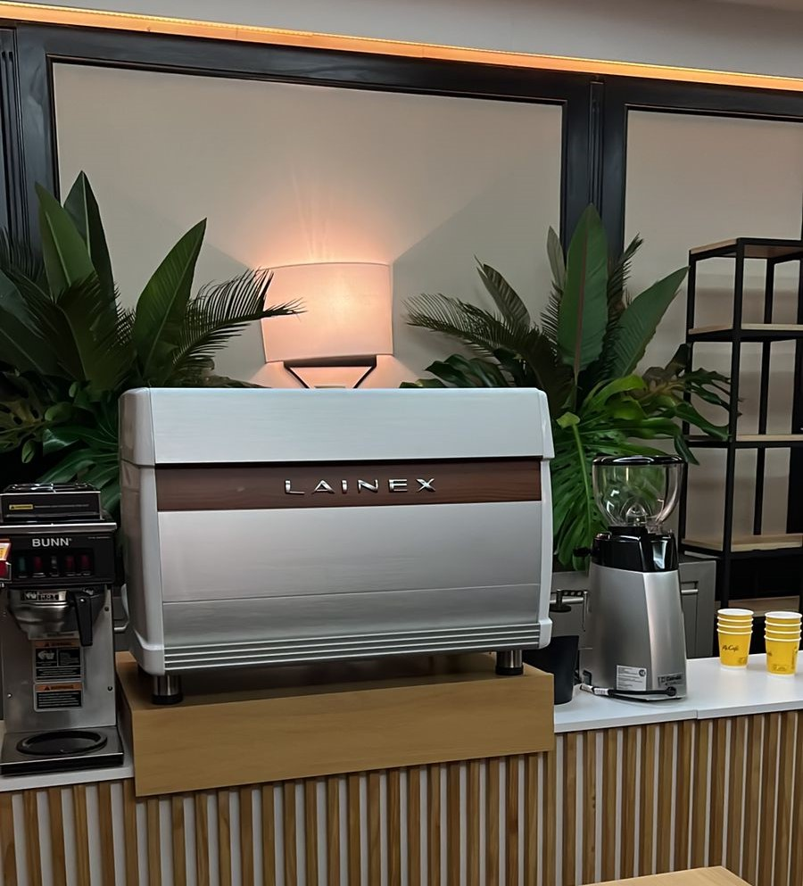

Nuestro Local
Sorella, una encantadora cafetería y pastelería estratégicamente ubicada entre Asunción y Mercedes CABA! Aquí, disfrutarás de sabores dulces y aromas tentadores. Deléitate con nuestra amplia variedad de pasteles y postres, acompañados de selectas opciones de café. Sorella es el lugar perfecto para satisfacer tus antojos en un ambiente acogedor. ¡Déjate seducir por nuestros exquisitos sabores en Sorella! ¡Te esperamos!
Nuestro Local
Nuestro Café
En la cafetería Sorella, utilizamos las cafeteras prodesionales Lainex para ofrecerte la mejor experiencia cafetera. Gracias a la precisión y calidad de estas máquinas, preparamos café de la más alta excelencia. Desde un aromático Espresso hasta un cremoso Cappuccino, nuestras especialidades son el deleite de nuestros clientes. Descubre el equilibrio perfecto de sabores en cada taza, cortesía de la magnífica cafetera Lainex.
Nuestro Café
Formas De Pago
En Sorella, nuestra cafetería y pastelería, te ofrecemos la comodidad de elegir entre diversas formas de pago. Aceptamos efectivo, tarjetas de débito y crédito, incluyendo Visa, MasterCard y American Express. También puedes realizar pagos a través de transferencias bancarias y utilizar billeteras electrónicas como Mercado Pago, Ualá y personal pay. Queremos brindarte opciones para que disfrutes de nuestros deliciosos productos sin preocupaciones. ¡Visítanos y disfruta de la experiencia Sorella con total facilidad de pago!
Nuestra Historia
En el encantador barrio de Villa Devoto, en Buenos Aires, las hermanas Cintia y Mayra cumplieron su sueño culinario. Tras graduarse en una prestigiosa escuela de pastelería, abrieron Sorella, una cafetería acogedora en CABA. Los aromas dulces y sabores irresistibles se mezclan en armonía. Cada taza de café y bocado artesanal transporta a un mundo de placer. La pasión y talento de Cintia y Mayra se reflejan en cada detalle, haciendo de Sorella un destino imperdible para amantes de la buena comida y la hospitalidad.
Nuestra Historia